Префектура Акита · Акита · еда и ночная жизнь
Акита после заката: французский ужин, суши из хатахаты и бары, куда ходят к хозяевам
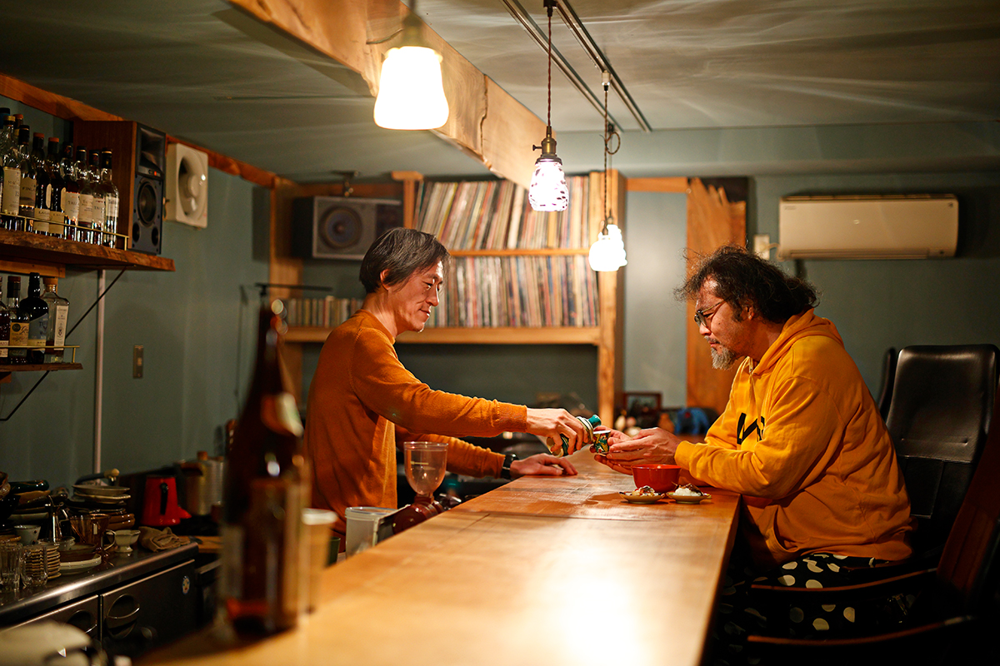
Город Акита славится рисом, сакэ и ферментированной едой, но местный керамист советует искать здесь прежде всего людей. Его список заведений начинается с французского ужина и заканчивается в баре на втором этаже, куда заходят, когда ещё не хочется домой.
Проводник
Акита глазами керамиста
Мастерская керамиста стоит в двадцати минутах езды от центра Акиты, у подножия горы Тайхэй, на берегу реки. В 2012 году он вернулся в родной город после нескольких лет работы в Токио и в гончарном городке Масико и с тех пор работает здесь. Свой фарфор с глазурью-селадоном он сравнивает со снегом: «Зимнее ясное небо, отражённое в снежном поле».
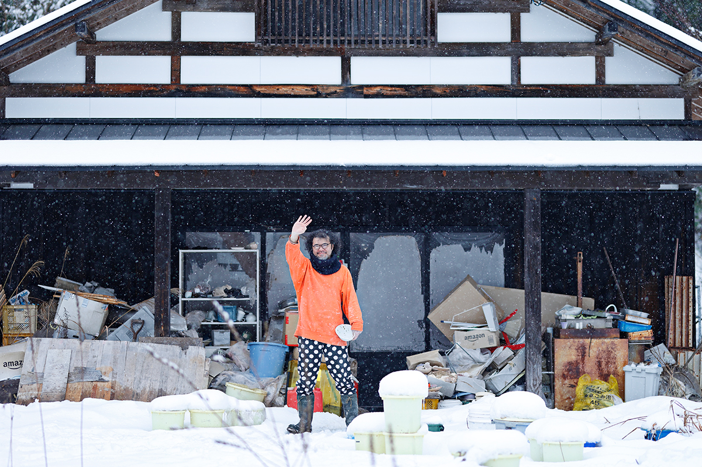
Сам он говорит, что редко произносит фразу «я люблю Акиту». Ему ближе другое: Акита для него место, где живут люди, которых он любит. Поэтому его путеводитель состоит из адресов, куда он ходит к поварам, хозяевам и барменам. Хозяин одного из заведений его списка говорит, что сила Акиты в характере людей и в огромной природе, и приезжих здесь правда встречают тепло.
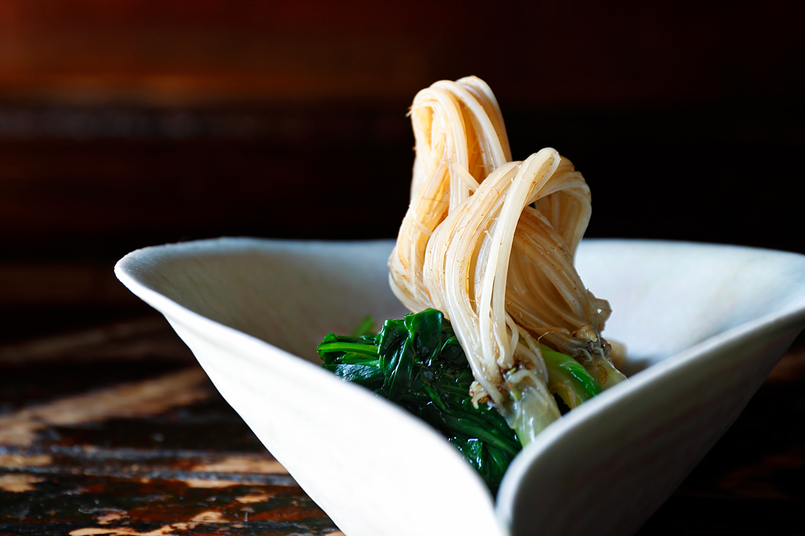
Рис, сакэ, ферментированные продукты: вкусного в Аките много. Дальше шесть мест, от ужина до последнего бокала.
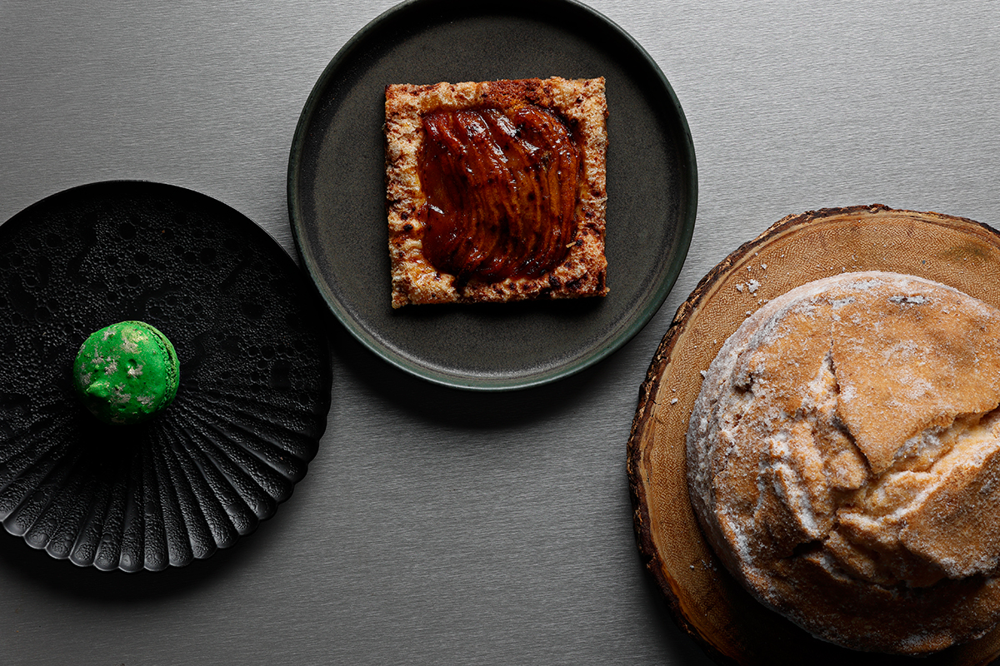
Ужин
Ichi La cuisine au comptoir: французская кухня у стойки
Шеф Ichi работал в ресторанах Токио, а ради собственного дела переехал в Акиту, на родину жены. Когда он впервые увидел посуду керамиста, она его поразила, и в 2024 году его коллекция этой посуды была одной из самых больших в префектуре.
В 2024 году попасть сюда можно было только по рекомендации. Шеф объясняет это просто: если заранее знать характер гостя и его вкусы, можно приготовить ужин именно для него. Иногда гостям из самой Акиты он нарочно подаёт продукты из других префектур.
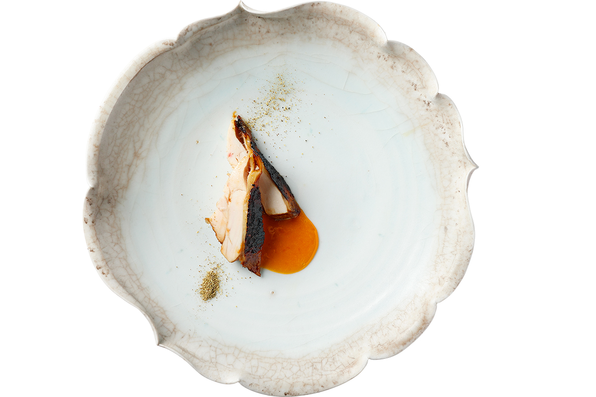
Основа меню французская, но почти всё в нём акитское. «В Аките богатая природа и хорошая вода. Рис, овощи, сакэ: здесь есть всё сразу», говорит шеф. Истории производителей он рассказывает прямо за стойкой, и они тоже часть ужина. В 2024 году курс стоил от 15 000 иен с налогом и обслуживанием.
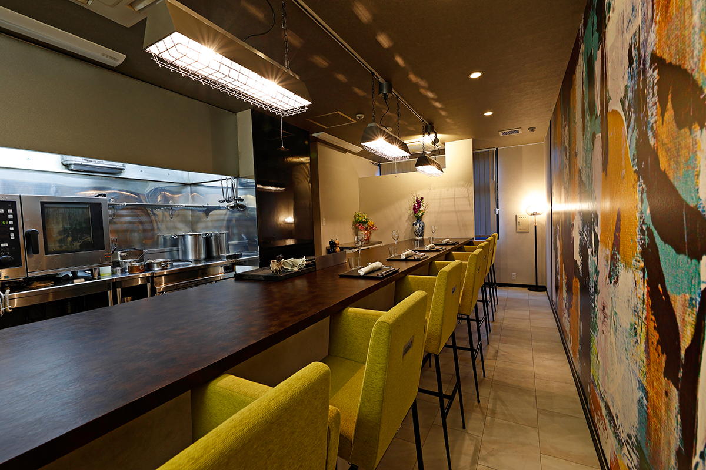
Ichi La cuisine au comptoir
- Адрес
- префектура Акита, Акита, Санно, 2-7-36, здание «Санно Соларис», 1-й этаж
- Часы работы
- 18:00–23:00, только по предварительной брони
- Выходные
- воскресенье
- Цены / Вход
- курс от 15 000 иен с налогом и обслуживанием, по рекомендации
- Сайт
- ichi-akita.com
Идзакая
«Оморо»: суши из хатахаты, доведённые за пятнадцать лет
«Оморо» стоит в нескольких минутах ходьбы от дома керамиста, и он заходит сюда в любом составе: один, с друзьями, с гостями из других префектур. Про кухню супругов, которые держат заведение, он говорит коротко: «Вкусно всё».
К 2024 году хозяин уже двадцать пять лет жил на родине жены, куда переехал из Токио. «В Аките чёткие времена года, это настоящая кладовая продуктов», говорит он. Местные суши из рыбы хатахата он поначалу не любил, поэтому решил сделать их по своему вкусу. На это ушло пятнадцать лет.
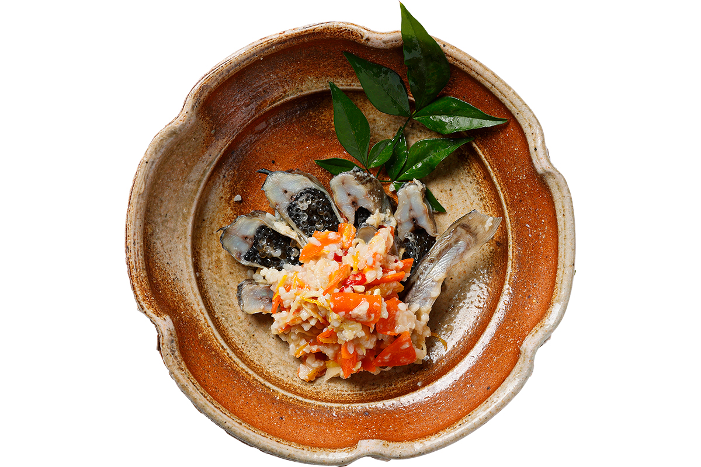
Рецепт этого блюда в каждой акитской семье свой. В «Оморо» его делают с юдзу, и вкус получается мягким. К нему стоит заказать местное сакэ, например «Юки-но бидзин» или «Харугасуми».
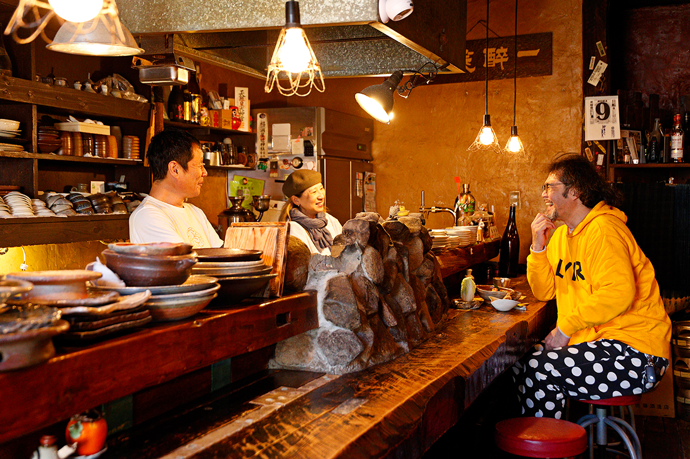
«Оморо»
- Адрес
- префектура Акита, Акита, Тэгата-Синсакаэ-мати, 2-37
- Телефон
- +81 18-832-0497
- Часы работы
- 18:00–23:00 (последний заказ в 20:00)
- Выходные
- среда и нерегулярные выходные
Сладости
STOVE+: ради этих десертов едут в Акиту
Шеф-кондитер STOVE+ учился в ресторанах Токио, во Франции и Бельгии, а в 2000 году открыл кондитерскую в родной Аките. Керамист называет его работу одним словом: «сильнейшая».
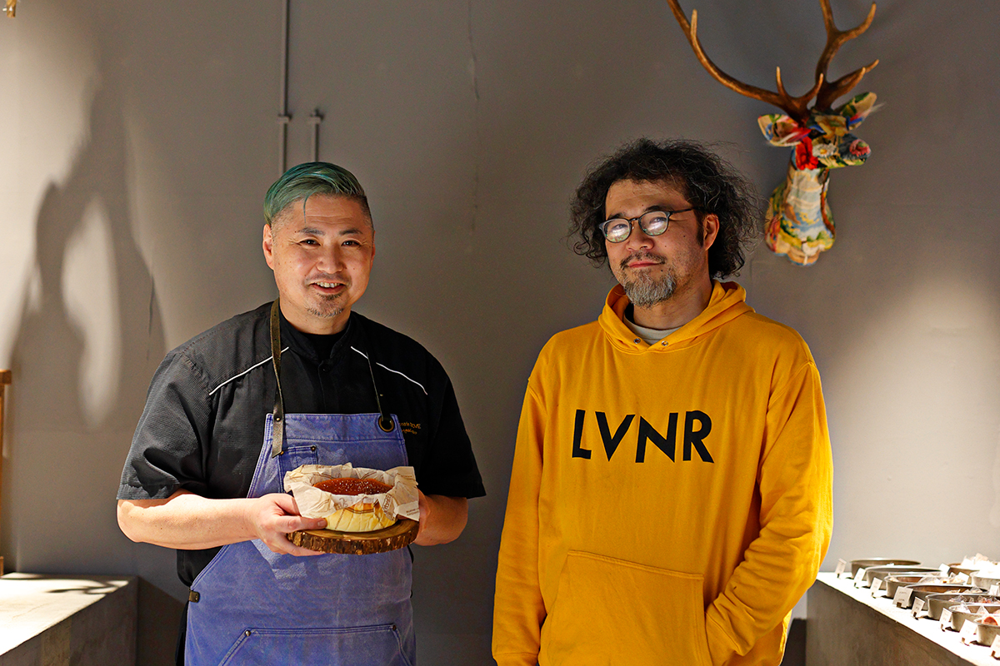
Рецепты здесь меняют по сезону и по состоянию продуктов. Нежные изделия шеф караулит у духовки за три минуты до готовности, а то, что ему не нравится, на витрину не попадает. «Хочу, чтобы сладости были ещё точнее», говорит он.
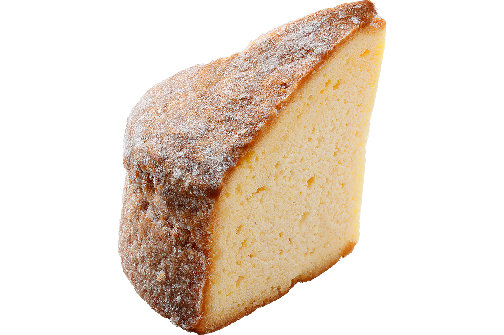
На витрине около ста видов: пирожные, макаронс, выпечка к чаю.
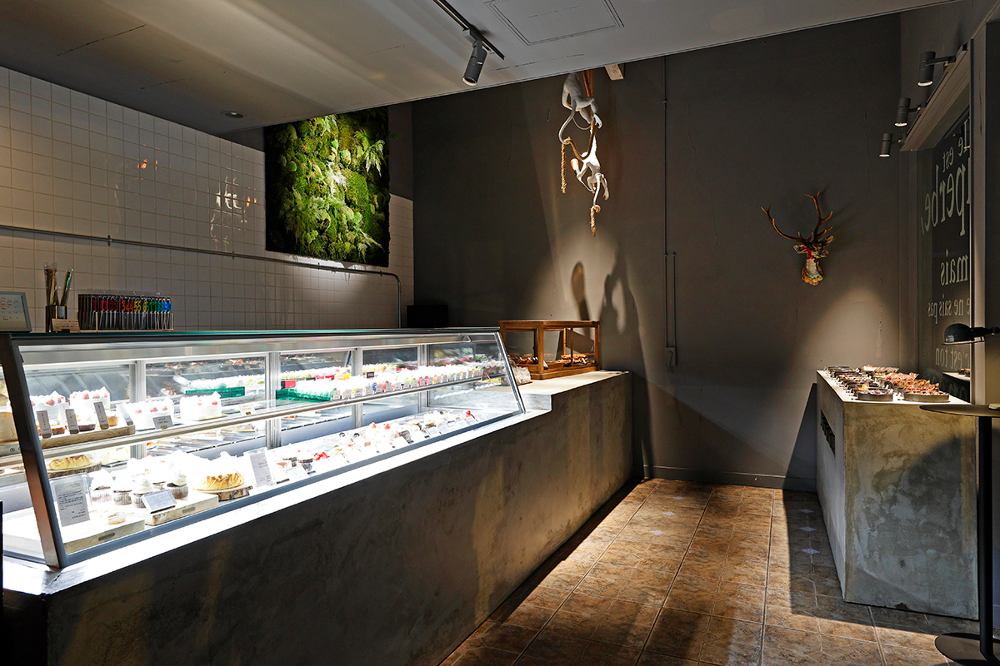
STOVE+
- Адрес
- префектура Акита, Акита, Хироомотэ, Кондо-Сэкикоси, 21-2
- Телефон
- +81 18-838-1779
- Часы работы
- 12:00–18:30
- Выходные
- нерегулярные
- Сайт
- stove-plus.com
Ночь
«Кусакай-но мисэ»: горные травы и дичь от музыканта
Керамист любит музыку: в студенческие годы он подрабатывал в редакции журнала для бас-гитаристов. Через музыку он и познакомился с хозяином «Кусакай-но мисэ», участником рок-группы. Хозяин родом из Акиты и с детства ходит в горы: ловит рыбу, собирает горные травы, охотится. Иногда он уходит в лес на четыре-пять дней, а шеф Ichi бывает его спутником.
Заведение он открыл, чтобы такая акитская жизнь не пропала. Собранное в горах он готовит сам и подаёт с выпивкой.
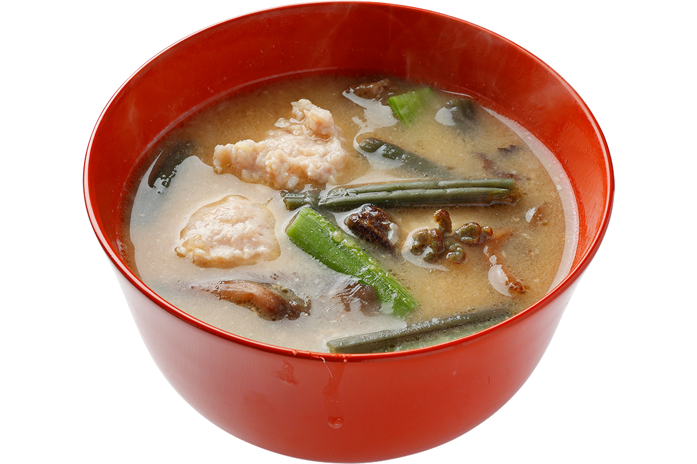
«Кусакай-но мисэ»
- Адрес
- префектура Акита, Акита, Накадори, 6-12-13, здание «Минъё кайкан», 1-й этаж
- Телефон
- +81 70-8555-8410
- Часы работы
- 18:00–2:00
- Выходные
- четверг
Вино
«Котю»: бар, где знают всю Акиту
В «Котю» много постоянных гостей, сюда заходят и мастера акитских сакэварен. Хозяйка с юности работает в Аките с гостями: начинала как хостес, помогала в винном баре знакомых. Она слушает внимательно и держит лёгкую дистанцию, и именно ради этого к ней возвращаются. Бар для неё прежде всего место встречи: по-японски «ба» и значит «место».
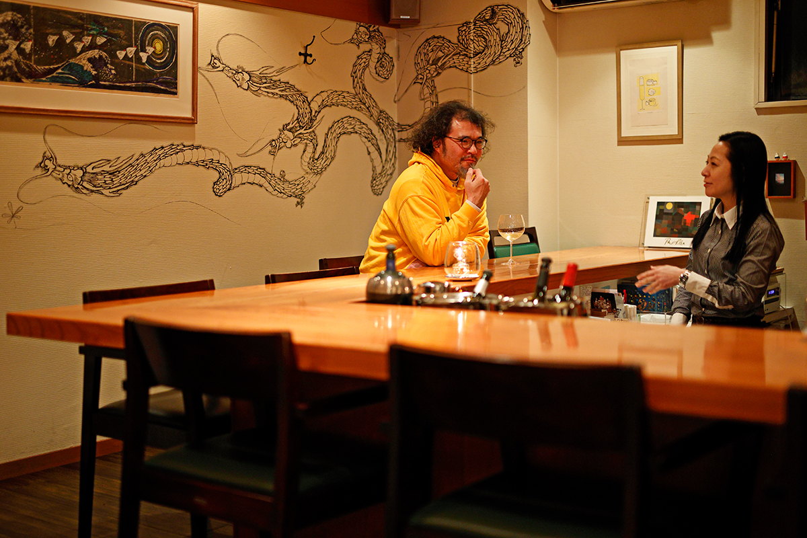
Город тесный, и разговор быстро находит общих знакомых. В студенческие годы хозяйка подрабатывала в рок-баре, где бывал и керамист. А хозяйку «Оморо» она помнит харизматичной продавщицей времён своей школы.
В основном здесь пьют французское вино, но есть и японское, в том числе из акитского горного винограда.
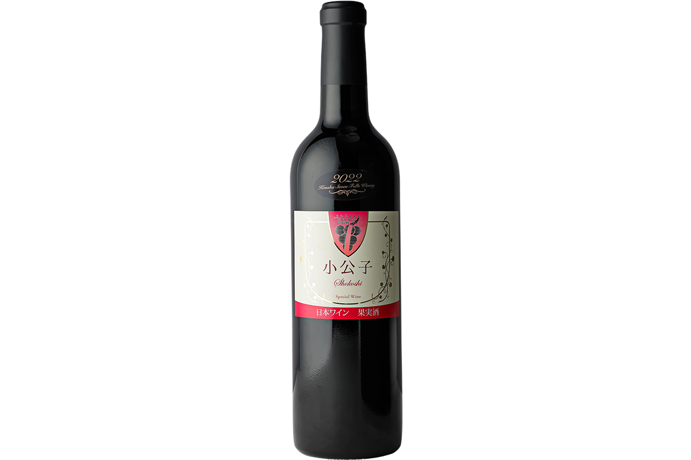
«Котю»
- Адрес
- префектура Акита, Акита, Омати, 5-1-23, здание «2BOX», 2-й этаж
- Телефон
- +81 18-863-1787
- Часы работы
- 19:00–1:00
- Выходные
- нерегулярные
Последний бокал
«Сайдбэк»: бар как студенческий клуб
Когда керамисту ещё не хочется домой, он идёт в «Сайдбэк». Бар стоит в квартале развлечений: по крутой лестнице на второй этаж, за дверью, и там вас встречает хозяйка, сияющая в женском образе. Днём она работает графическим дизайнером, а в Токио, Киото, Саппоро и Сэндае регулярно выступает на вечеринках, поэтому у бара много поклонников и за пределами Акиты.
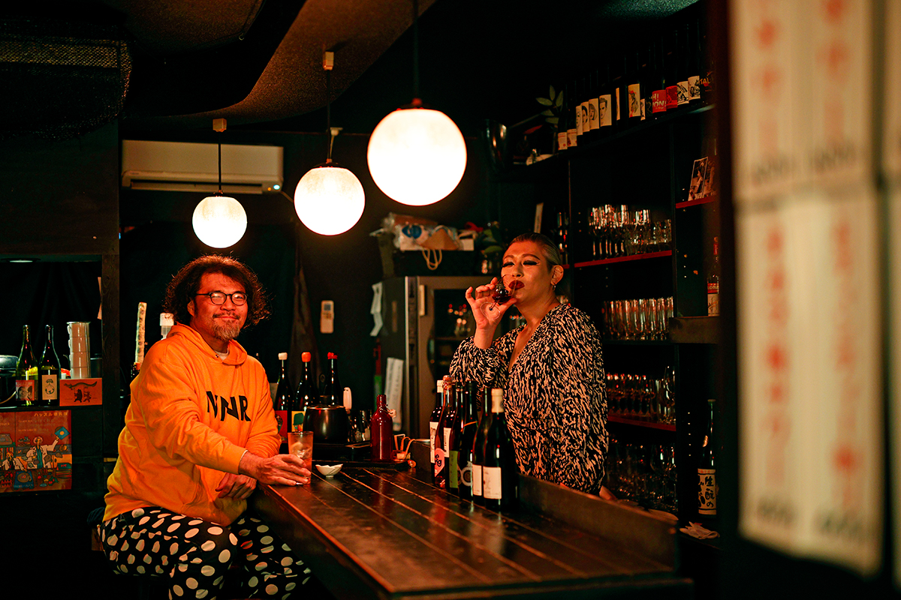
«Не хочу, чтобы обо мне судили по внешности. С бутылками и обложками пластинок то же самое. Мне нужны честные отношения»
хозяйка «Сайдбэка»
В меню собственные сауэры хозяйки, сакэ и натуральное вино. Правило у неё одно: она не держит напитков, о которых не может рассказать.
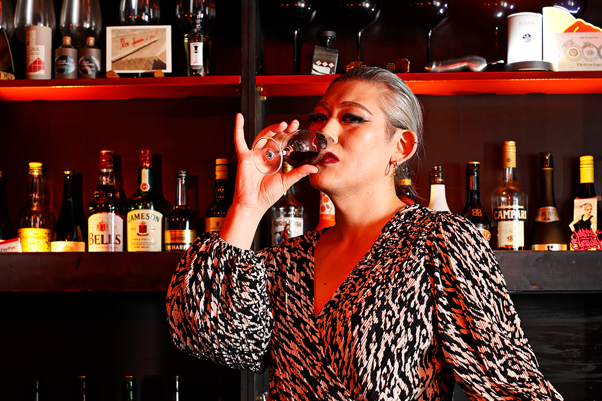
«В Аките вкусно всё: рис, вода, воздух, сакэ. Такой роскоши больше нигде нет. Даже влажность в самый раз, коже полезно»
хозяйка «Сайдбэка»
«Сайдбэк»
- Адрес
- префектура Акита, Акита, Омати, 4-2-4, 2-й этаж
- Телефон
- +81 90-5184-5182
- Часы работы
- 20:00–24:00
- Выходные
- воскресенье и четверг
Ночи в Аките длинные. Керамист, начав вечер, легко доходит до второго и третьего бара, и каждый раз его ведут не вывески, а люди, к которым хочется зайти.
Фото: Норихито Судзуки.